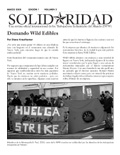

Submitted on Tue, 03/11/2008 - 2:00pm
 By
Bill Bumpus - The Bridge, March 2008
By
Bill Bumpus - The Bridge, March 2008
Deon Furtick, 31, of
Roxbury, and a father of three, had worked for four years in the deli
at the Jamaica Plain store at 57 South St. He was fired for not
punching out for a meal break on January 8th.
Furtick
had never punched out for meal breaks, and had never been told this was
necessary. He did not suspect his job was in jeopardy.
Harvest Manager of Operations Marc Cutler used to be Jamaica Plain
store manager. There he had personally signed off on employees’ hours
every week. So he would have noticed that Furtick did not punch out on
his breaks.
Submitted on Tue, 03/11/2008 - 1:40pm

Con:
- Domando Wild Edibles
- Crónica sobre viaje con Coalición Por Justicia en la Maquiladoras
- Informe de la Comisión de Solidaridad Internacional
- Perú: La Industria de la Construcción, la Tragedia y la Venganza
PDF File
Submitted on Tue, 03/11/2008 - 1:35pm
Featuring:
- Taming Wild Edibles
- Report on IWW Delegation to the Maquiladoras
- Peru: The Construction Industry -Tragedy and Vengance
- Report of the International Solidarity Commission
PDF File
Submitted on Tue, 03/11/2008 - 12:50pm
Disclaimer: Brandworkers International is not an official IWW project. members of the IWW participate in Brandworkers International.
 For Immediate Release: Brandworkers International
For Immediate Release: Brandworkers International
Contact: press (at) brandworkers.org
March 6, 2008
New Advocacy Organization Protects and Advances the Rights of Retail and Food Employees
Brandworkers International Provides a Combination of Legal, Advocacy, and Organizing Support
New York, NY- Prompted by a transforming job market, workers' rights advocates have launched a non-profit organization to protect the rights of the increasing number of workers employed at retail and food chains. Based in New York, Brandworkers International links retail and food employees with concerned individuals to make positive change on the job and in the community. Over three hundred employment attorneys have already joined with Brandworkers to offer legal assistance to workers in need.
"Retail and food workers need an innovative organizational voice to face the variety of challenges posed by a globalized economy," said Brandworkers senior adviser Jennifer Gordon, a professor of labor law at Fordham Law School and a recipient of the MacArthur 'Genius' Fellowship for her leadership on low-wage worker issues. "By connecting under served employees with social change resources including lawyers, labor unions, and
community groups, Brandworkers will help ensure that workers' rights are both protected and expanded."
Submitted on Wed, 03/05/2008 - 2:00pm
 Statement for March 6 International Day of Action in Solidarity with
the Workers of Iran
Statement for March 6 International Day of Action in Solidarity with
the Workers of Iran
The International Solidarity Commission of the Industrial Workers of
the World (IWW), an international rank-and-file labor union, warmly
extends our solidarity with the workers of Iran, on this, the
occasion
of the March 6th Global Day of Action. Reflecting on the 100+ year
history of our own union, we in the IWW recognize that real victories
for workers have never come without struggle, hardship, and--all too
often--repression. For years now, the Iranian workers have bravely
faced down brutal opposition from government forces, right-wing
clerics and their supporters, and of course, the bosses themselves.
They have paid a terrible price for their efforts to bring about
justice in the workplace and in society. We know that workers,
organizers and activists have been harassed, threatened, beaten,
fined, fired, whipped, jailed and worse, simply for exercising their
right to organize.